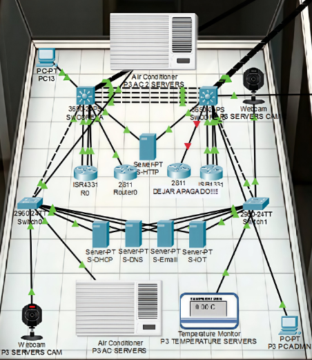

Infraestructura de red de un edificio de la UPSIN
Cisco Packet Tracer · VLANs · IoT · VoIP
Recreación de la infraestructura de red de un edificio de la UPSIN en Cisco Packet Tracer. La topología es en estrella y conecta switches, routers y servidores de DHCP, DNS, correo y HTTP, además de dispositivos IoT como cámaras web y un monitor de temperatura.
El direccionamiento parte de la red 172.16.0.0 y se divide en diez VLAN con subredes de distinto tamaño, de /22 a /28.
Ver en GitHub